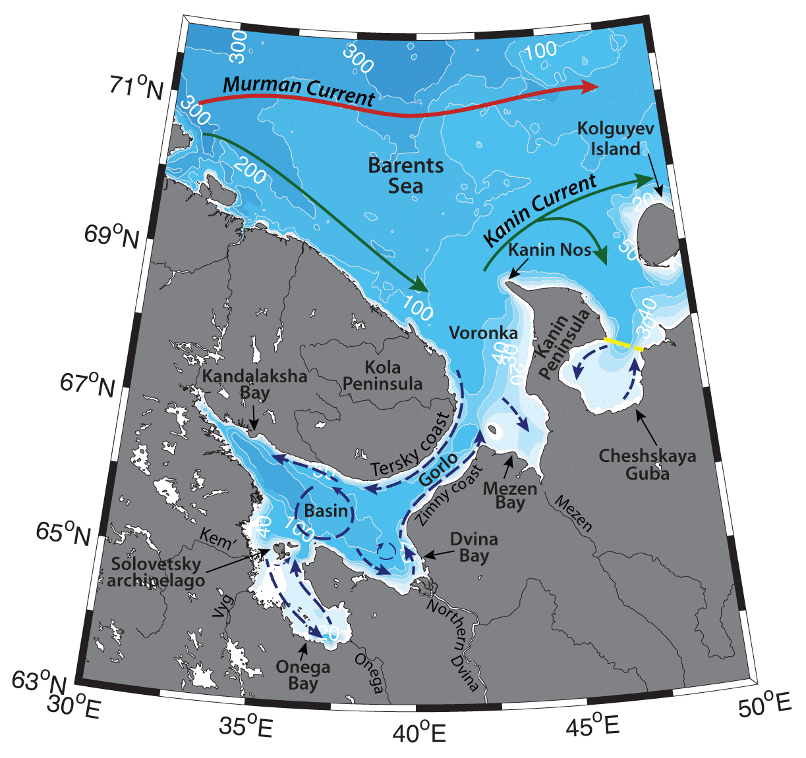

Schematic water circulation patterns and geographical place names in the White Sea region. Adopted from Dobrovolskyi & Zalogin (1982), Filatov et al. (2005), Kravchishina et al. (2015). Dashed line marks the studied region.
Cheshskaya Guba is a bay in the Barents Sea, situated to the east of Kanin Peninsula with mean depth of 30 m and lots of shallow areas of 2-3 m depth, which areas vary from 15–20 to 30–40 m. It is connected to the Barents Sea via wide opening of 55 km, with 55 m depth.
White Sea Coastal Water (-1.8<T<8°C, 32.5<S<34.7) exits the White Sea (with the outflow Timonov current along the southern coast of Gorlo Strait) and turns to the east into the Kanin current around the Kanin Peninsula. This water mass inflows into the Cheshskaya Guba along the peninsula. The outflow is advected along the north-eastern coast of the bay. Chesha, Pesha, Oma and several other small rivers inflow into Cheshskaya Guba, freshening the waters. Due to the influence of river discharge and influence of the outflow current from the White Sea, the region of Cheshskaya Guba has the lowest salinity in the Barents Sea. Salinity of the bay can change from almost fresh waters up to 30 – 33 (Kazanova, 1949). Cheshskaya Guba is covered with ice from November till the end of June.
Tides are semidiurnal in the Barents Sea, with the main wave entering from the west and north. Tidal currents are rather weak in the open Barents Sea, but they significantly strengthen in the bays of White Sea. Tides in the region of Kanin – Kolguyev Bank are about 0.3 – 1 m/s, while the amplitudes can reach ~4 m in the Cheshskaya Guba. Tides enhance mixing and bring nutrients to the surface (Dobrovolskyi & Zalogin, 1982; Filatov et al., 2005).
Murman Coastal Current brings modified Atlantic Water (AW; with T>3°C, S>35 in the Norwegian Current; e.g. Loeng, 1991, Dalpadado et al., 2003) eastwards from the Norwegian coast to the Novaya Zemlya. AW is getting transformed on the Gusinaya, Novaya Zemlya, and Kanin banks, by getting fresher and colder and turns to the northeast, where exits the Barents Shelf via St. Anna Trough (e.g. Ozhigin et al., 2000; Shauer et al, 2002). On its way eastwards, it can get into the coastal bays, Pechora Sea, as well as flow through the Kara and Yugor straits into the Kara Sea.